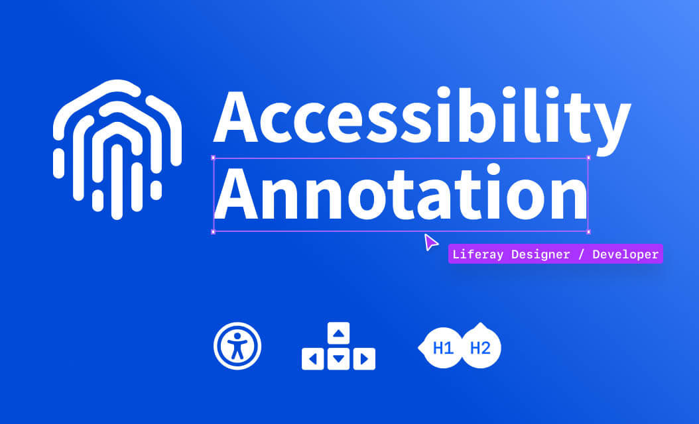
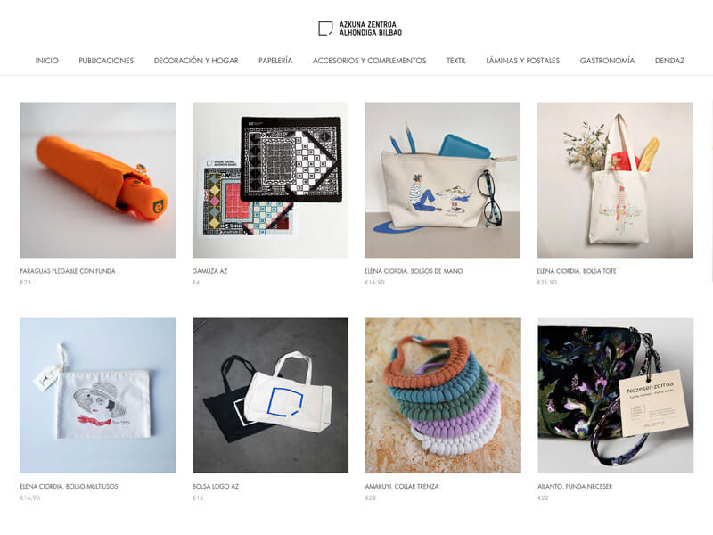
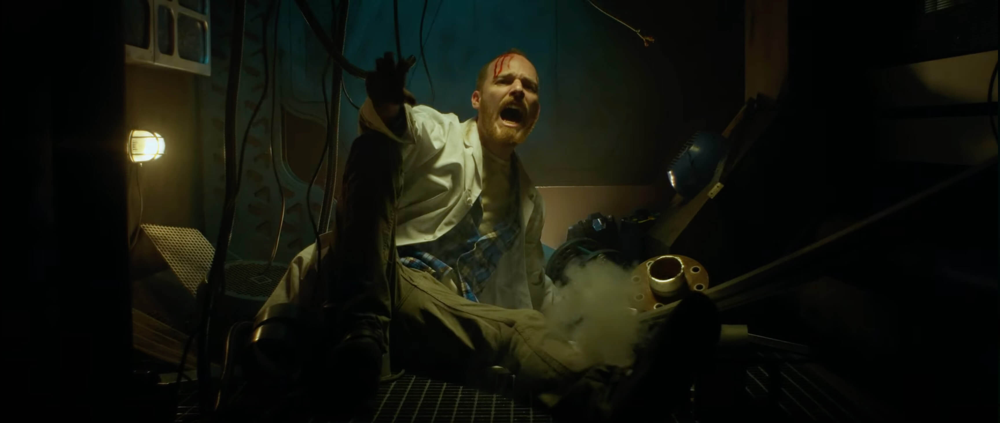
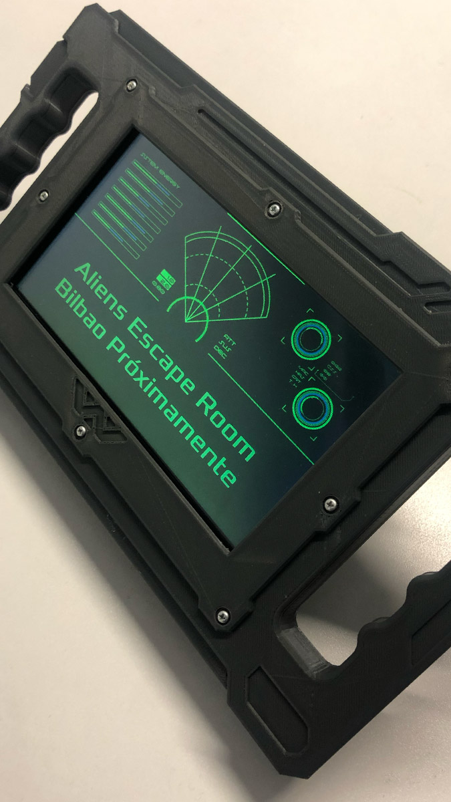
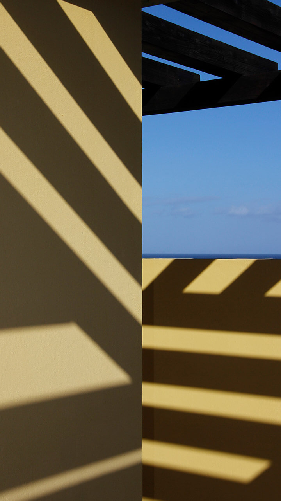
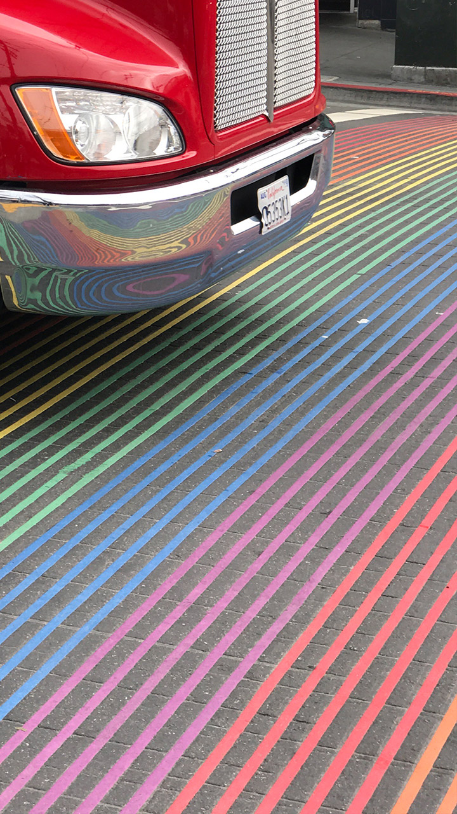
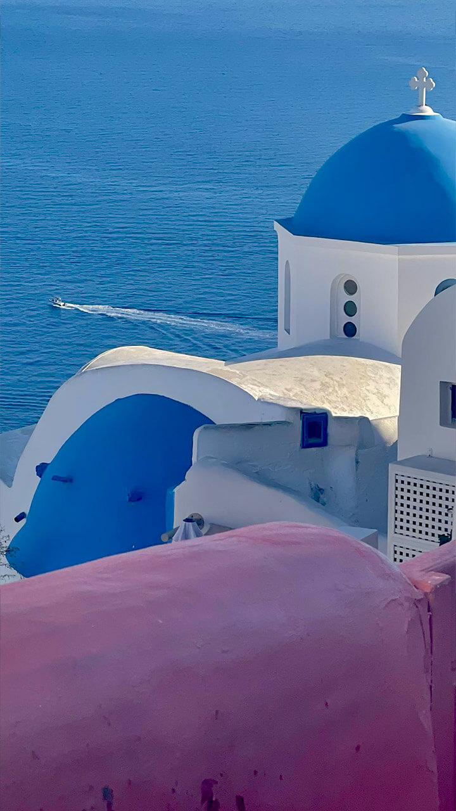
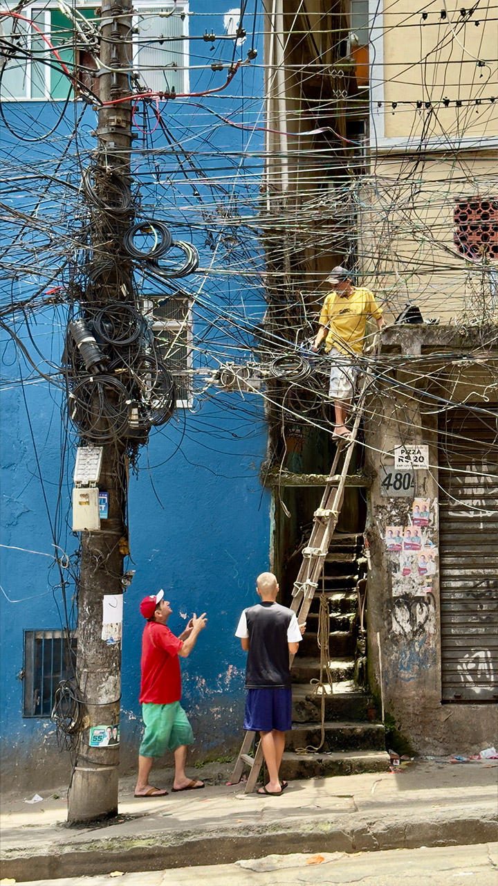

Accessibility as a Principle
I began my journey in accessibility in 2006 and have been deeply committed to it ever since. Currently, I serve as an Accessibility Expert and the primary accessibility lead at Liferay. I also actively participate in several W3C community groups.
In recent years, accessibility has become a cornerstone at Liferay. We have resolved thousands of accessibility issues and implemented processes to adopt an Accessible by Design approach across the company. As the lead responsible for accessibility, my role includes publishing VPATs, reviewing processes, and validating issues and their respective solutions, even in the most complex technical tasks, thanks to my development expertise.
One of my recent achievements was the launch of liferayinclusive.com a website I manage and oversee personally.
In addition to my technical contributions, I have been sharing knowledge and fostering awareness through talks, workshops, and podcasts focused on accessibility. Below, you'll find a selection of my most recent engagements.
Building Design Systems since
In I participated in my first design system for the Asturian Consortium, and since then I have been able to collaborate in many of them. This led me to participate in the creation as co-founder of Lexicon in 2015, a design system which I continue to evolve today. I also had the opportunity to participate in the development of its implementation as a frontend, which has helped me build bridges between design and development.



I have had the privilege of working with renowned companies
Before joining Liferay I worked at Saunier Duval or Vaillant, and in consulting with many others companies such as Fagor, BBVA, Iberdrola, Mondragon Group, Gamesa, Irizar, EITB, La Caixa, Bellota, Basque Government, Government of Cantabria, Azkoyen, Asturian Consortium, Osakidetza, AXA, Caser, Mapfre, Telefónica, AENA, ETEA, DIA, Alcampo, Gamesa, Ormazabal, AGBAR, Bank March, Cofares and many more.
I am personally proud to have worked with Philippe Starck team on the Alhóndiga Bilbao Project.




Work Experience and Education
I have dedicated nearly 24 years to the digital design industry, leading projects and design departments while exploring and mastering various branches of design and development. Throughout my career, I’ve been fortunate to work across diverse disciplines, but two stand out as my greatest passions: time optimization through design systems and inclusive design (accessibility).
I firmly believe in the discipline of design and its core principles, which center on solving problems and ensuring that solutions do not exclude or discriminate against anyone. These values have guided my approach, allowing me to create impactful, correct user-centered solutions that prioritize accessibility and efficiency.
Work Experience
-
Liferay
Staff Product Designer / Accessibility Expert at Liferay
-
Freelance
-
Comercio Electrónico B2B 2000, S.A.
Head of Design / UX / Accessibility / Front-end Department
-
Saunier Duval España
Product Visual Designer / Motion Designer
-
Q59 Agency
Head of Design and Web Developer
-
Freelance
Education
-
Judicial Expert on Pericial Analysis on Digital Accessibility
Euroinnova International Online Education
-
Elaboración de Informes Periciales
Universidad Nebrija
-
Multiple Liferay Certifications
Liferay
-
Dirección de Proyectos y Gestión Eficiente de Equipos
Autentia
-
Project Management and Efficient Team Management
Autentia
-
Advanced Digital Marketing - SEO / SEM
Publimedia
-
Effective Team Techniques And Creativity
InterGrupo
-
UX, Análisis, Evaluación y Test de Usuarios
ITCA
-
Mobile and Markup Transcodefication
CTIC
-
Team Management
Deusto Formación
-
Web Mobile - Principles of Mobile Design
Bizkaia Enpresa Digitala
-
Accesibility WCAG 2.0
CTIC
-
Master in Accessible Technologies for Information Society Services
Technosite (ONCE)
-
2D Animation
TRAZOS School
-
CIPSA
Interaction Design / Macromedia Flash
-
Técnico Superior E.I.E.
Escuela Superior Julio Verne, Leganés - Madrid
Hobbies
Many of my hobbies are related to design, and some have even led to freelance projects. I’ve been fortunate to turn my passions and hobbies into work, which allows me to enjoy what I do every day.
Design and Construction of Immersive Scenarios, Physical Experiences, and Products
Passionate about robotics, films, and immersive scenarios, I specialize in designing escape rooms, animatronics, and various gadgets to enhance real-world experiences.


Photograph and Travel
I have formal training in photography, a passion I’ve nurtured since an early age. Traveling to 45 countries has allowed me to combine these two hobbies, capturing unique moments and diverse cultures, now primarily using my mobile phone.



